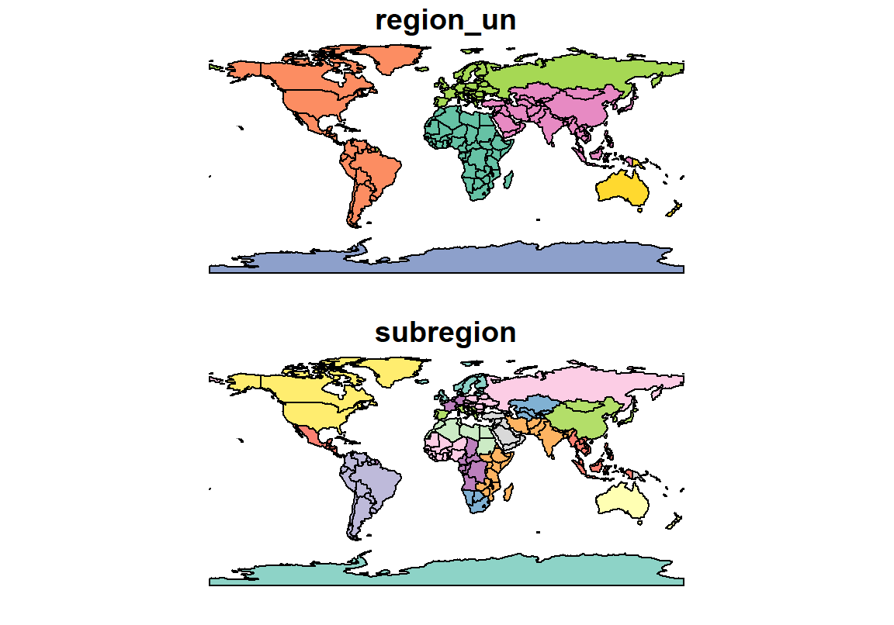
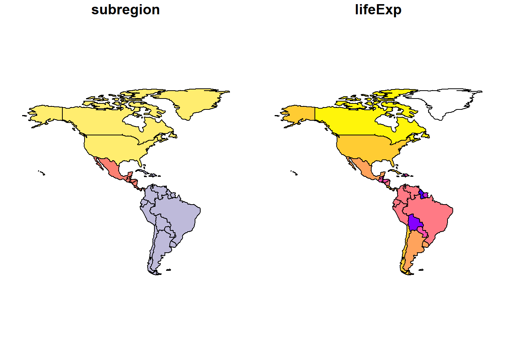
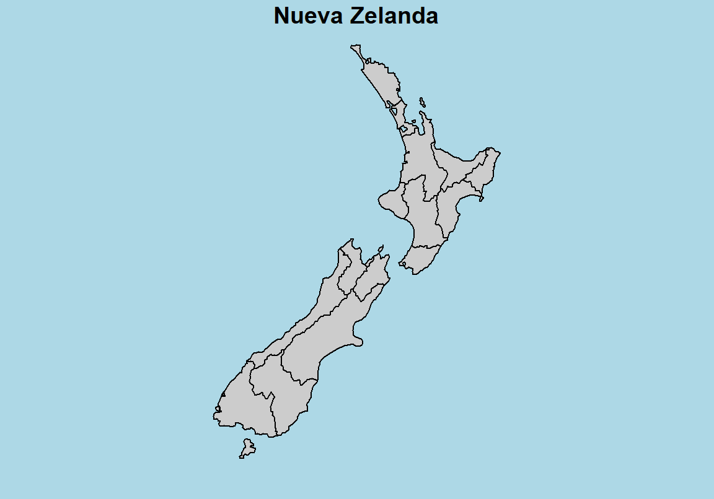
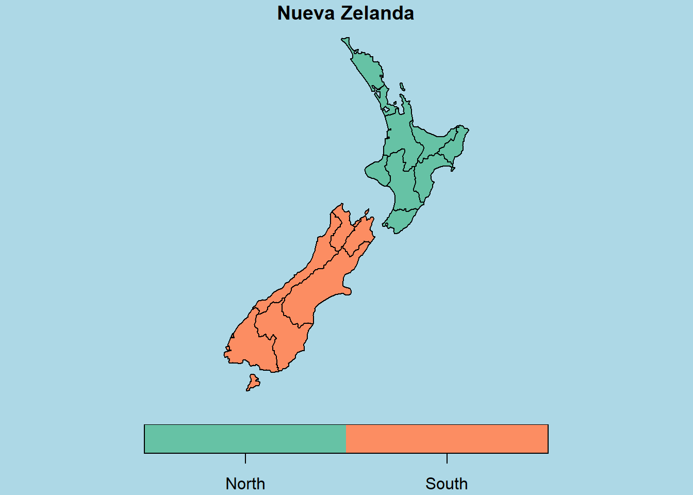
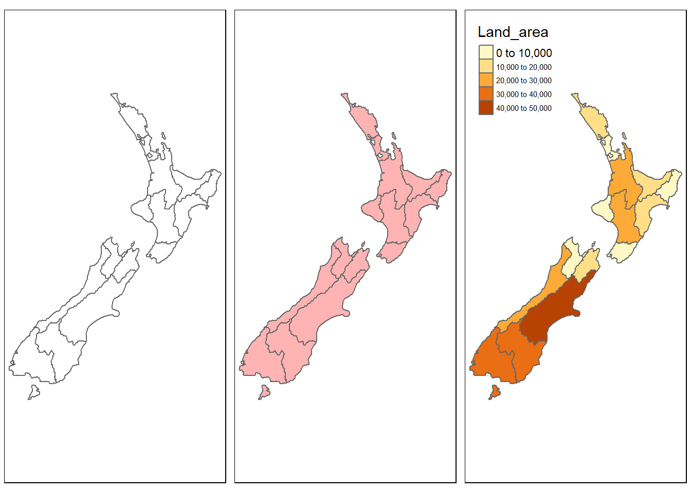
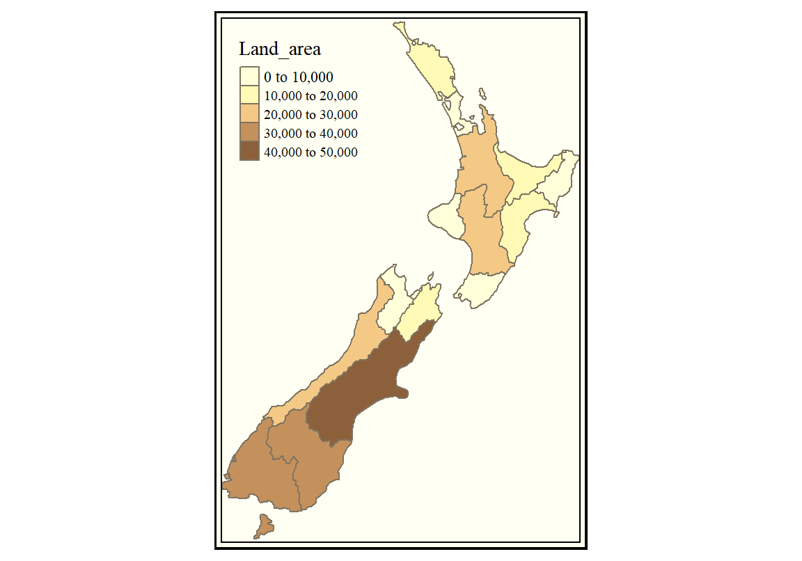
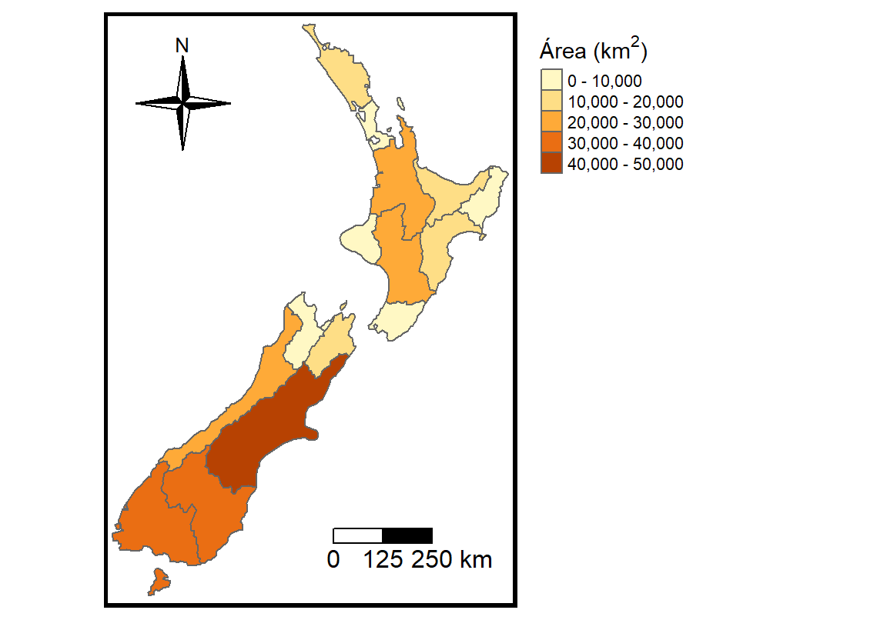
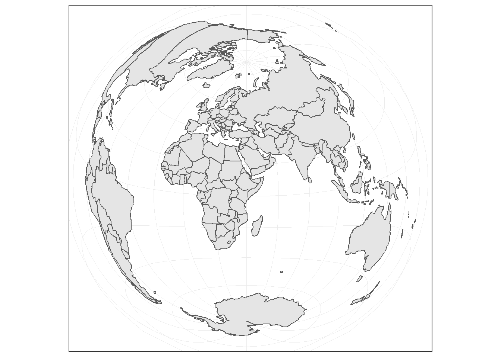
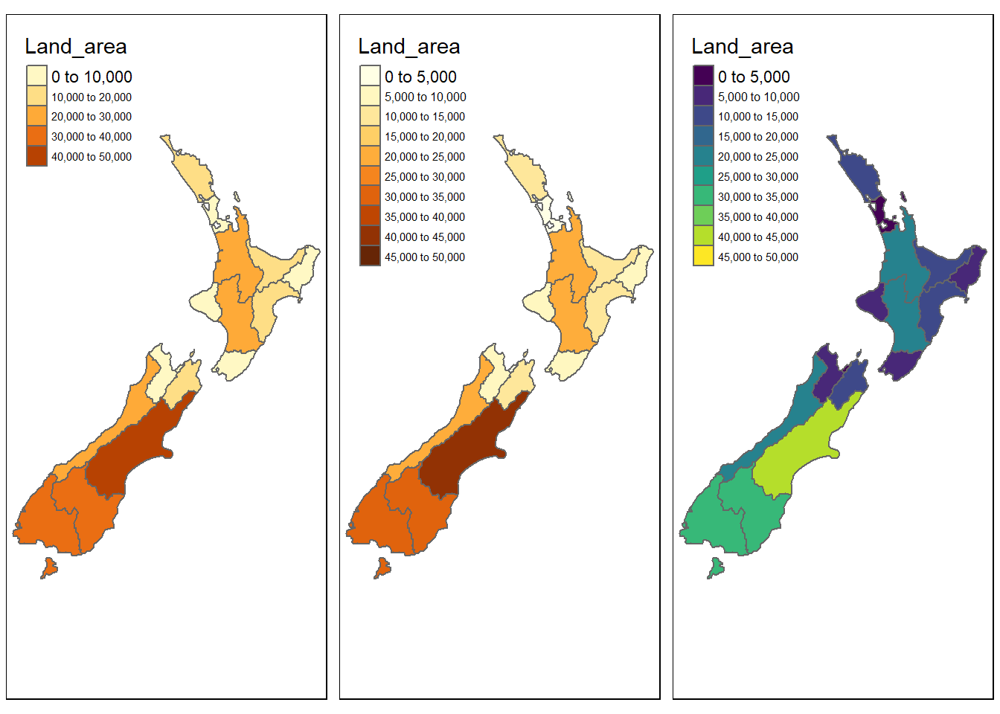

Capítulo 7 Estadística Espacial
En este capítulo exploraremos herramientas estadísticas y de visualización para análisis de superficie. Nos centraremos en la capacidad gráfica de diversos paquetes de R.
7.1 Paquetes Geo-R
Históricamente, el análisis de datos geográficos se centró en el paquete sp, que ha sido el más utilizado para manejar datos espaciales.
La funcionalidad gráfica generalmente vino acoplada al mismo sp. El paquete sp guarda información espacial como vértices de polígonos, sistemas de coordenadas y otros atributos en objetos de la clase Spatial. Aunque la funcionalidad gráfica del paquete sp usando plot() es limitada, desarrollos recientes de paquetes como tmap, ggplot2, ggmap y leaflet permiten una amplia variedad de visualizaciones estáticas e interactivas, que pueden ser incorporadas a documentos .html como la versión electrónica de este libro. El paquete sf es un desarrollo relativamente reciente construido a partir de sp.
7.2 Paquetes GEO
Vamos a instalar los paquetes que necesitamos para trabajar con data de tipo espacial.
install.packages("sf")
# tmap se toma su tiempo, instala muchas dependencias
# usamos el repositorio de CRAN en vez del de Rstudio
install.packages("tmap", repos = "https://cloud.r-project.org")En Mac y Linux la instalación es más complicada, seguir instrucciones en: https://github.com/r-spatial/sf y en https://github.com/mtennekes/tmap
Para facilitar que podamos trabajar con datasets abiertos, podemos cargar los datasets del paquete spData.
install.packages("spData")Cargamos los paquetes que vamos a necesitar:
library(ggplot2)
library(dplyr)
library(sf)
library(tmap)
library(spData)7.3 Trabajando con datos espaciales
Los datos geográficos pueden venir en base de vecotores localizados en un sistema de coordenadas de referencia. Un sitio puntual puede estar representado en longitud y latitud por un par coordenado (\((x,y)\)). Además, es posible encontrar datos que también posean información sobre altitud. Los puntos pueden conectarse formando polígonos (por ejemplo, los bordes de una región).
Una pequeña demostración del dataset world de sf:
plot(world)
También podemos utilizar subsets del dataset world:
plot(world[4:5])
Miremos el continente americano
# subset
americano <- world %>%
filter(region_un=="Americas") %>%
select("subregion", "lifeExp")
# Graficar
plot(americano)
El mismo resultado puede obtenerse usando base R (figura omitida).
# Subset
americano <- world[world$region_un=="Americas",
c("subregion", "lifeExp")]
# Graficar
plot(americano)Veamos con un poco más de profundidad cómo está organizado el dataset. Podemos ver que cada país tiene un código iso_a2 (dos letras que identifican a cada país)19, un nombre largo o name_long y un continente (podemos chequear toda la información en el dataset con names(world)). Vemos también que tenemos una columna geom con objetos MULTIPOLYGON de clase sfc_MULTIPOLYGON, `sfc. Estos geoms constituyen los bordes de los paises.
world[1:5, 1:3]## Simple feature collection with 5 features and 3 fields
## geometry type: MULTIPOLYGON
## dimension: XY
## bbox: xmin: -180 ymin: -18.28799 xmax: 180 ymax: 83.23324
## epsg (SRID): 4326
## proj4string: +proj=longlat +datum=WGS84 +no_defs
## iso_a2 name_long continent geom
## 1 FJ Fiji Oceania MULTIPOLYGON (((180 -16.067...
## 2 TZ Tanzania Africa MULTIPOLYGON (((33.90371 -0...
## 3 EH Western Sahara Africa MULTIPOLYGON (((-8.66559 27...
## 4 CA Canada North America MULTIPOLYGON (((-122.84 49,...
## 5 US United States North America MULTIPOLYGON (((-122.84 49,...7.4 topological-relations
7.5 Nueva Zelanda
En esta sección vamos a explorar el dataset nz como caso de estudio para demostrar la capacidad gráfica que adquirimos al trabajar en R con datos espaciales.
# Fondo celeste
par(bg = 'lightblue')
# Si queremos hacer 2 gráficos
# par(mfrow=c(1,2))
# Grafico de la isla
plot(nz[1], col="gray80", main="Nueva Zelanda")
plot(nz[2], main="Nueva Zelanda", key.pos = 1)
La funcionalidad de base es limitada. Exploremos el paquete tmap que tiene una funcionalidad muy pareceida a ggplot2, con capas y gramática.
# Mapa con bordes
bordes <- tm_shape(nz) +
tm_borders()
# Agregamos fill de un solo color
con_color <- bordes + tm_fill(col="red", alpha=0.3)
# Agregamos fill segun el area de la region
# Cuidado! no usamos aes(col= Land_area) cual ggplot2
area_region <- tm_shape(nz) +
tm_borders() +
tm_fill(col = "Land_area")
# mostramos los mapas juntos
tmap_arrange(bordes, con_color, area_region)
Ejercicio: Investigar las opciones breaks y palette en tm_fill()
7.5.1 Cambiando colores con style
El ejercicio anterior apunta a modificar a mano los valores de breaks. El paquete tm puede asignar los valores de corte de manera automática según un estilo o style (ver ?tm_polygons()):
style = pretty(default), redondea a números enteros y los separa equidistantes.style = equaldivide los valores de entrada en cortes de igual rango. Este tipo de estilo provoca que los mapas tengan poca variadad de color si tenemos una distribución asimétrica en la variable que elegimos para colorear.style = quantiledivide en cuantiles nuestras observaciones de modo que el mismo número de observaciones entra en cada corte.style = jenksidentifica grupos con valores similares y maximiza las diferencias entre grupos.style = contnos proporciona un numero continuo de colores en un rango cromático. Podemos utilizarlo cuando queremos representar gradientes de terreno (gráficos tipo raster).style = catnos sirve para representar variables categóricas de modo que cada categoría será coloreada con un color único.
A continuación se muestran ejemplos de los distintos estilos:
Podemos cambiar el estilo de manera global con:
area_region + tm_style("classic")
Podemos crear gráficos de calidad profesional.
Ejercicio: Inspeccionar el siguiente código y comentar en cada línea su función.
titulo_leyenda = expression("Area (km"^2*")")
tm_shape(nz) +
tm_borders() +
tm_fill(col = "Land_area", title = titulo_leyenda) +
tm_compass(type = "4star", position = c("left", "top")) +
tm_scale_bar(breaks = c(0, 125, 250), size = 1,
position = c("right", "bottom"))+
tm_layout(frame.lwd = 5, legend.outside = TRUE,
legend.outside.position = c("right", "bottom"),
legend.bg.color = NA,
legend.format = list(text.separator = "-"))
7.6 Proyecciones
Para transformar el mundo de esfera a plano, utilizamos ciertas transformaciones matemáticas o proyecciones. A continuación muestro algunas proyecciones conocidas, utilizando datos de GDP per cápita20.
Figure 7.1: GDP per cápita. Distintas proyecciones. Con pequeñas modificaciones al español. Fuente: https://github.com/mtennekes/tmap/tree/master/demo/WorldFacets
La base para construir distintas proyecciones es cambiar el argumento projection en el comienzo del llamado. Para ver el código completo dirigirse al Anexo
# longitud-latitud
tm_shape(World, projection = "longlat") + ...
# robinson
tm_shape(World, projection = "robin") + ...
# eck4
tm_shape(World, projection = "eck4") + ...Podemos investigar otras transformaciones con ggplot2. Para hacerlo podemos utilizar la funcion st_transform() presente en sf. Podemos utilizar la siguiente transformación:
“+proj=laea +y_0=0 +lon_0=40 +lat_0=10 +ellps=WGS84 +no_defs”
# Transformar el objeto sf World
world2 <- sf::st_transform(
World,
"+proj=laea +y_0=0 +lon_0=40 +lat_0=10 +ellps=WGS84 +no_defs"
)
# Graficar el nuevo objeto
ggplot() + geom_sf(data = world2) +
theme_bw()
7.7 Mapas animados
7.8 Mapas interactivos
7.9 Resumen
7.10 Recursos
- Este capítulo es un resumen del libro Geocomputation with R. Intenté resumir detalles técnicos que considero que son cruciales para usuarios avanzados pero que escapan a las intenciones de este libro introductorio.
- La viñeta de
tmapaquí y aquí - Más información sobre manejo de datos espaciales en R aquí
- Información sobre modificar la leyenda en
tmap(http://www.jla-data.net/2017/09/20/2017-09-19-tmap-legend/) - Información sobre proyecciones con
ggplot2(http://egallic.fr/maps-with-r/)
7.11 Respuestas
Podemos cambiar la escala con la que se grafica utilizando breaks y podemos cambiar el tipo de colores utilizando el argumento palette. Por ejemplo:
# Original
area_region <- tm_shape(nz) +
tm_borders() +
tm_fill(col = "Land_area")
# Modifico breaks para mayor detalle
cortes <- seq(0, 50000, 5000)
area_2 <- tm_shape(nz) +
tm_borders() +
tm_fill(col = "Land_area", breaks = cortes)
# modifico la paleta de colores
# probar tmaptools::palette_explorer()
area_3 <- tm_shape(nz) +
tm_borders() +
tm_fill(col = "Land_area",
breaks = cortes,
palette = "viridis")
# mostramos los mapas juntos
tmap_arrange(area_region, area_2, area_3)
Anexo
La figura 7.1 fue construida con el siguiente codigo:
data("World")
longlat <- tm_shape(World, projection = "longlat") +
tm_polygons("gdp_cap_est",
palette = "Purples",
style = "fixed",
n = 7,
breaks = c(0, 500, 2000, 5000, 10000, 25000, 50000, 1000000),
title = c("GDP per cápita"),
legend.format = list(text.separator = "-"),
textNA = "Sin Datos") +
tm_style("natural", earth.boundary = c(-180, -87, 180, 87)) +
tm_format("World", inner.margins = 0.02, frame = FALSE) +
tm_legend(position = c("left", "bottom"),
bg.color = "gray95", frame = TRUE)+
tm_credits(c("coordenadas longitud-latitud"), position = c("RIGHT"))
robin <- tm_shape(World, projection = "robin") +
tm_polygons("gdp_cap_est",
palette = "Purples",
style = "fixed",
n = 7,
breaks = c(0, 500, 2000, 5000, 10000, 25000, 50000, 1000000),
title = c("GDP per cápita"),
legend.format = list(text.separator = "-"),
textNA = "Sin Datos") +
tm_style("natural", earth.boundary = c(-180, -87, 180, 87)) +
tm_format("World", inner.margins = 0.02, frame = FALSE) +
tm_legend(position = c("left", "bottom"),
bg.color = "gray95", frame = TRUE)+
tm_credits(c("Robinson (1963)"), position = c("RIGHT"))
eck4 <- tm_shape(World, projection = "eck4") +
tm_polygons("gdp_cap_est",
palette = "Purples",
style = "fixed",
n = 7,
breaks = c(0, 500, 2000, 5000, 10000, 25000, 50000, 1000000),
title = c("GDP per cápita"),
legend.format = list(text.separator = "-"),
textNA = "Sin Datos") +
tm_style("natural", earth.boundary = c(-180, -87, 180, 87)) +
tm_format("World", inner.margins = 0.02, frame = FALSE) +
tm_legend(position = c("left", "bottom"),
bg.color = "gray95", frame = TRUE)+
tm_credits(c("Eckert IV (1906)"), position = c("RIGHT"))
# todo junto
tmap_arrange(longlat, robin, eck4, nrow = 3)Trabajar con paises es particularmente complicado. Las mejores bases de datos poseen códigos internacionales de 2 o 3 letras pero es muy común encontrar problemas con los nombres cortos (o largos) de los distintos países. Además, los datos longitudinales agregan problemas cuando la composición geopolítica cambia (por ejmplo, es común encontrar datos en donde aún tenemos USSR como un país).↩
Para ver las distintas proyecciones disponibles recomiendo seguir el archivo de ayuda de la función de
tmaptoolsque maneja proyecciones (?get_proj4). También Wikipedia↩